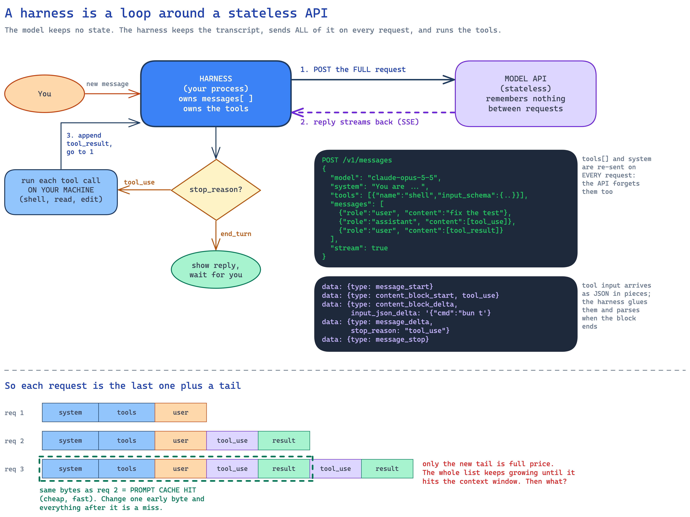
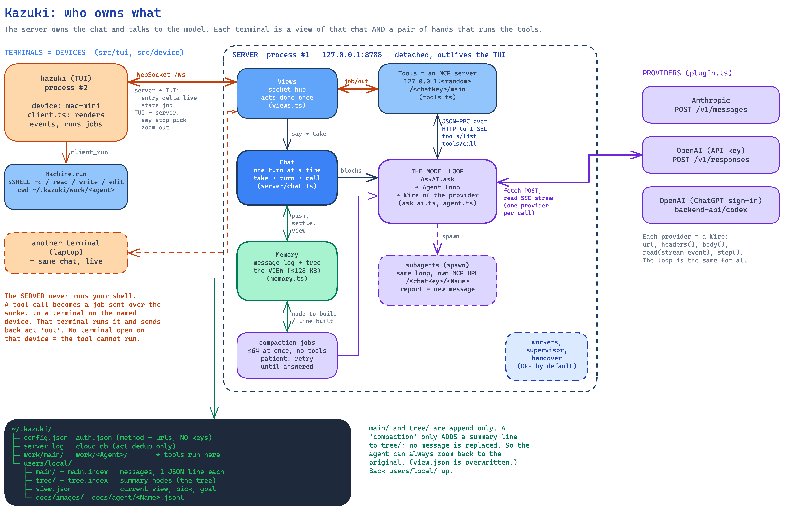
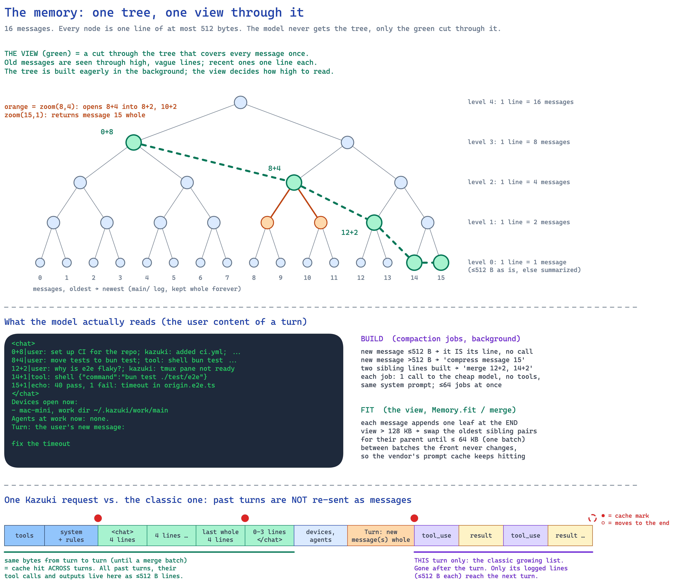
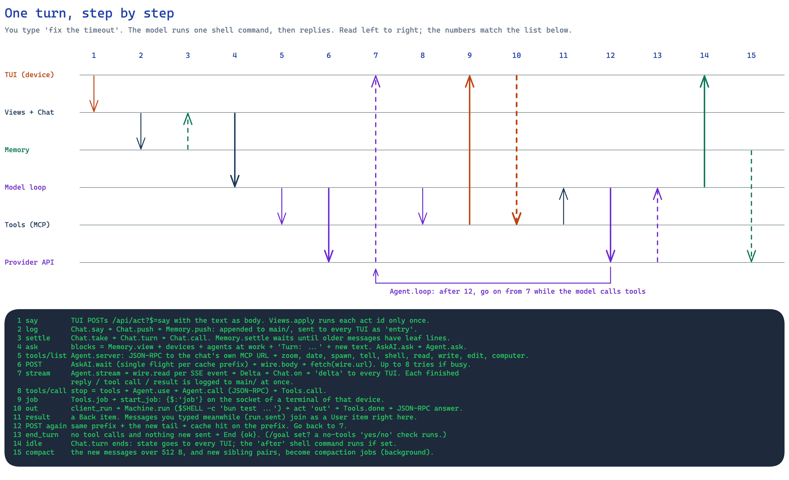

How Kazuki thinks
A course in 19 short lessons. We start with one HTTP call to a model. We end with the full path of one Kazuki turn: through the memory tree, the server, and your terminal. Each lesson adds one idea to the ones before it.
All facts come from the code at commit 46ebd76. File references are relative to the repo root.
One call to a model
Four small facts. Every harness, Kazuki too, is built from them.
A model is a stateless function
Starts hereYou send text. You get text back. The provider remembers nothing after it answers.
Think of a pure HTTP endpoint with no session and no cookies. All the state is in the request body. If you send the same request twice, the model does not know that it saw it before.
# request
POST https://api.anthropic.com/v1/messages
{
"model": "claude-opus-5-5",
"max_tokens": 1024,
"system": "You are a helpful agent.",
"messages": [
{"role": "user", "content": "Hi. What is 2 + 2?"}
]
}
# response
{
"role": "assistant",
"content": [
{"type": "text", "text": "4."}
],
"stop_reason": "end_turn"
}Check yourself. Where does the chat history live between two requests?
In your process. The API holds none of it. Whoever calls the API owns the history, and must send it again.
A conversation is a list that you send again
Builds on 1To continue a chat, add the answer and your next message to the list. Then send the whole list again.
The list only grows. Each request contains the request before it, plus a tail. The system prompt and the tool list also go out every time, because the API forgot them too.
The dashed part of request 3 is the same bytes as request 2.
The prompt cache. The provider keeps the processed form of a prefix for some minutes (Anthropic: 5). If the next request starts with the same bytes, that part costs about a tenth of the normal price and returns faster. You mark where a cached prefix ends with cache_control. Lesson 13 shows how it works in depth.
One rule matters more than any other on this page: a change to one early byte makes everything after it a miss. The order of the prefix is tools, then system, then messages. Kazuki's memory design is built around this rule.
Check yourself. You add today's date to the top of the system prompt. What happens to the cache?
Each day the first bytes change, so the whole request misses once per day. If you add it at the end of the messages, only the tail changes.
The reply arrives in pieces
Builds on 1With "stream": true the response is a stream of events. The harness glues them into the answer.
The stream uses Server-Sent Events: each data: line holds one JSON event. Text arrives a few words at a time. A tool call's input arrives as pieces of a JSON string, and you can parse it only when its block ends. Near the end, one event says why the model stopped: stop_reason.
What arrives
What the harness has built
A tool is a JSON contract
Builds on 1The model cannot run anything. It writes a JSON object. Your code does the work.
You describe each tool with a name, a description and a JSON Schema. When the model wants a tool, it answers with a tool_use block: the tool name, an id, and an input object that matches the schema. Your code runs the tool. You send the output back as a tool_result with the same id.
// 1. you declare it, in every request
"tools": [
{
"name": "shell",
"description": "Run a command with $SHELL -c on a device.",
"input_schema": {
"type": "object",
"properties": {
"device": {"type": "string"},
"command": {"type": "string"}
},
"required": ["device", "command"]
}
}
]
// 2. the model asks for it, in its answer
{
"type": "tool_use",
"id": "toolu_01",
"name": "shell",
"input": {"device": "mac-mini", "command": "bun test"}
}
// 3. you run it and answer, in your next request
{
"role": "user",
"content": [
{
"type": "tool_result",
"tool_use_id": "toolu_01",
"content": "40 pass, 1 fail"
}
]
}Some tools run at the provider, for example web search. You declare them, and their results come back in the same stream. You run nothing. MCP is only a JSON-RPC protocol to ask a server for its tool list (tools/list) and to run one (tools/call). The model never sees MCP. Kazuki uses it in an unusual place, which lesson 15 shows.
Check yourself. Can the model call a tool that you did not declare?
It can write a tool_use with any name. Your harness decides what happens. Kazuki answers with an error result: "No tool X." (Agent.use, agent.ts:592).
The loop
Put lessons 2, 3 and 4 together and you have a harness. Then you meet its two limits.
The agent loop
Builds on 234Send the list. Read the stream. If the model asked for tools, run them, add the results, and send again.
stop_reason is the loop condition. tool_use means "run these and call me again". end_turn means "I am done". Step through one real task below and watch the list grow.
The list the harness sends
// the whole idea, in 10 lines
messages = [{role: "user", content: text}]
loop {
out = stream(POST /v1/messages {model, system, tools, messages})
messages.push({role: "assistant", content: out.blocks})
if (out.stop_reason !== "tool_use") break
messages.push({role: "user", content: out.toolUses.map(u =>
({type: "tool_result", tool_use_id: u.id, content: run(u.name, u.input)}))})
}Check yourself. In request 3 of the stepper, which parts are new to the provider?
Only the last assistant answer and the last tool result. Everything before them is the same bytes as request 2, so it is a cache hit.
Two limits: cost and the context window
Builds on 25The list grows with every tool call. The cache makes it cheaper. Nothing makes it smaller.
A test log of 20 KB goes into every request after it. Every model has a context window, a largest request it accepts. When the list is larger, the request fails. So every harness needs a policy for old content. There are three common answers.
| Policy | What happens | What it costs |
|---|---|---|
| Cut the oldest messages | The list keeps only its end. | The agent forgets how the task started. |
| Summarize once | When the list is too long, one model call replaces old turns with one summary. Most coding agents call this "compaction". | Detail is lost for good. The new summary changes the start of the request, so the cache misses. |
| A summary tree (Kazuki) | Keep every message. Show a view with recent detail and old summaries. Open any summary again when needed. | Many small summary calls on a cheap model, in the background. |
The next seven lessons build the third answer, one piece at a time.
Kazuki's memory
The reason you forked this repo. One chat that never ends, and a way to fit it into every request.
Keep everything, show a little
Builds on 6The log on disk keeps every message forever. A call never gets the log. It gets a view.
Kazuki has one chat, with no "new chat" button. Every message is one JSON line in ~/.kazuki/users/local/main/, and nothing in that folder is ever deleted or rewritten. That is the log.
The view is a short list of lines that covers the whole chat in at most about 128 KB. Recent messages show one line each. Old messages show as summary lines that each cover many messages. A call sees the view, never the log. This is what the model reads at the start of a turn:
<chat>
0+8|user: set up CI for the repo; kazuki: added ci.yml; echo: 41 pass
8+4|user: why is e2e flaky?; kazuki: suspects tmux timing
12+2|user: fix it; tool: edit wait helper
14+1|tool: shell {"command":"bun test ./test/e2e"}
15+1|echo: 40 pass, 1 fail: timeout in origin.e2e.ts
</chat>Each line starts with id+n: the n messages that start at message id. So 8+4 covers messages 8, 9, 10 and 11. The kind tags (user, kazuki, tool, echo for a tool result) tell the model who said what.
Summaries in pairs make a tree
Builds on 7Each message gets one line. Each two neighboring lines merge into one line. Repeat.
Every line is at most 512 bytes, about 70 words. A short message is its own line. A longer one is summarized by a cheap model. Then two neighboring lines merge into one line of the same size, and two of those merge again. The result is a binary tree. A line at level 0 covers 1 message, level 1 covers 2, level 2 covers 4, and so on.
Each summary is one small model call with no tools. Kazuki calls this job the compactor. It starts a job as soon as both halves of a node exist, in the background. Nothing waits for them, with one exception that lesson 12 explains.
Use the tree below. Click Add a message a few times. A new parent appears each time two neighbors are complete. Click any node, in the view or not, to see its name, its slot and its content.
What the model reads (click a line, or any node in the tree, to inspect it)
Node
A toy: the budget counts lines here. Kazuki counts bytes: up to 128,000 bytes, which is a few hundred lines. The summary texts are made up; real ones come from the compactor.
A parent is a short copy of its two children
Yes: every node above level 0 is a summary of its two children. The input of node 4+2 is the two lines 4+1 and 5+1, one after the other. If the two lines fit in 512 bytes together, that joined text is the parent, and no model is called. If not, the compactor writes one shorter line from them.
The tree keeps every level. A new parent never removes or changes its children. So the facts of one message are on disk many times, each time shorter. This is message 5 and every node above it:
| Where | Node | Covers | Text |
|---|---|---|---|
| tree, level 4 | 0+16 | 0–15 | CI on bun test (41 pass); flaky e2e fixed in the wait helper |
| tree, level 3 | 0+8 | 0–7 | CI set up: ci.yml on bun test, 41 pass |
| tree, level 2 | 4+4 | 4–7 | switched to bun test; 41 pass, all green |
| tree, level 1 | 4+2 | 4–5 | user: switch to bun test; kazuki runs it |
| tree, level 0 | 5+1 | 5 | tool: shell: bun test |
| log | message 5 | 5 | The whole message, with its images. This is the source of everything above. |
Toy texts. These messages are so short that Kazuki would only join them, with no model call, up to level 4. Real leaves are often summaries of long tool outputs, so most parents come from the compactor.
The tree has about two nodes per message (n leaves make n − 1 parents), and each node is at most 512 bytes. So the copies cost at most about 1 KB of disk per message. In return, the view can choose how much detail to show for each part of the chat. Lesson 10 shows why the view must choose exactly one copy.
When a node is built
Three events start work (Memory.pump, memory.ts:776):
- A message arrives (
Memory.push). Its leaf is ready at once. If the message is at most 512 bytes, the leaf is the message itself. It is stored at once, with no call. If it is longer, a call with the LEAF task starts. - A node is stored (
Memory.store). If its sibling is built too, their parent is ready. The parent's source is the two child texts. If the two texts together fit in 512 bytes, the parent is stored at once, with no call. If not, a call with the MERGE task starts. When that parent is stored, the same check runs for its own parent. This is the climb. - A call ends (
Memory.job). Kazuki starts the next ready nodes, then checks the view (Memory.fit).
The rules for each call:
- Order. Oldest first, in message order (
Memory.ctx). On a tie, the parent goes first. - Limit. At most 64 calls at once (
JOBS). Kazuki also does not start nodes beyond the 64th message whose leaf is not built yet. A large import cannot run far ahead. - The call. It goes to the model that your picks name as the compactor. It gets the
seenview up to the node, for context (a second, smaller view, lesson 10), and then the task. If the answer is over 512 bytes, Kazuki asks again and says how many bytes it was over, up to 5 tries, and keeps the shortest answer. If no answer comes, it keeps the first 512 bytes of the source (Memory.build,memory.ts:925). - Two sides. The chat's calls always run. An import's calls stop when you pause the import.
Three files on disk
Builds on 78Messages go to one log. Tree nodes go to a second log. The view is a short list of pointers into the tree. The two logs only grow.
This is the folder of one chat:
~/.kazuki/users/local/
main/2026-10-31.jsonl messages: one JSON line each, one file per day
main.index 16 bytes per message: where its line is
tree/2026-10-31.jsonl tree nodes: one JSON line each, in the order built
tree.index 16 bytes per node: where its line is
view.json the view: [level, index] pairs, and a few settings
docs/images/ images, named by their hash
docs/agent/Ada.jsonl the log of the subagent AdaGreen: how a call finds the text of one view line. The pair [1,6] gives slot 25. Slot 25 gives the day file and the byte where the line starts. Grey: node [0,14] was made from message 14, which main.index finds the same way. The byte numbers are real for these toy lines.
Watch one message arrive
The bench below runs the same steps as memory.ts, one at a time, and shows each file after each step. It starts with three messages. Click Add a message and follow the green highlights: first the log, then the view, then the leaf, then each parent that the new leaf completes. Add a long tool output adds a message of 24,000 characters. That one is too long to be its own leaf, so you see a compactor call.
main/2026-10-31.jsonl appended
main.index slot = message id
tree/2026-10-31.jsonl appended, in build order
tree.index slot = (2i + 1)·2l − 1
view.json written over
Compactor a model call, in the background
A toy with real rules. The byte numbers are the real sizes of these JSON lines. Two things are simplified: the view budget counts lines (6 lines, merged down to 3), not bytes, and the toy compactor keeps the start of each half, where a real one writes a new line with a model.
A message
Memory.push appends each message to the file of today as one JSON line. The size is the bytes of the message as a model reads it, here echo: edit applied. A message is written once and never changed.
// on disk this is one line; spaced here so that you can read it
{
"kind": "echo",
"text": "edit applied",
"i": 14,
"size": 18,
"date": "2026-10-31T14:02:11.402Z"
}A long text becomes more than one message. Each page holds up to 30,000 characters and has its own id, and every page except the last has "more": true. So a 100 KB test log is four messages, and four leaves in the tree. An image goes into docs/images/; the message keeps only its name, and one page holds at most 20 of them.
A tree node
When a node is built, Memory.store appends it to tree/. Like a message, a node is written once. These two lines are the same nodes as in the figure. The second one shows the rule from lesson 8: its two children fit in 512 bytes, so the parent is just the two lines, joined.
// two lines on disk; spaced here so that you can read them
{"l": 0, "i": 14, "text": "echo: edit applied", "size": 18}
{"l": 1, "i": 6, "text": "user: fix it\ntool: edit wait helper", "size": 35}How a read finds a line
Kazuki never searches the logs. Each index is a flat file of 16-byte slots: 8 bytes for the byte where the line starts, 4 for the day file, and 4 for the line length. Message i is in slot i. So to read message 14, Kazuki reads 16 bytes at byte 14 × 16 of main.index, then reads the line. A chat that is ten years old reads as fast as a new one.
Tree node (l, i) is in slot (2i + 1) × 2l − 1. This formula puts each parent between its two children. Look at the numbers in the figure below: from left to right they are 0, 1, 2, 3, and so on. A slot depends only on the level and the index, not on the number of messages. So the index never moves when the chat grows. A node that is not built yet has an empty slot.
Why the logs only grow
- A crash cannot damage old data. The worst case is one line cut short at the end of a file. The next load skips that line (
Memory.scan). - The indexes can be lost. If an index file is missing, the next load builds it again from the day files (
Memory.index). - Zoom can always go back down. When the view moves up to a parent, the children stay on disk.
view.json is the only file that Kazuki writes over. It writes view.json.new, then renames it. A crash leaves the old view or the new view, never half of each.
"Grows forever", and the number of levels
The tree has no fixed number of levels. It has one level for each binary digit of the message count (Memory.levels, memory.ts:1384). 1,000 messages need 10 levels, and a million need 20. Each time the count doubles, one level is added on top. So the height grows very slowly, but it never stops.
"Grows forever" means a different thing for each part:
| Part | How it grows | 1,000 messages | 1,000,000 messages |
|---|---|---|---|
main/ | by the full size of each message | depends on what you say and what tools print | |
tree/ | about 2 nodes per message, each at most 512 bytes | at most about 1 MB | at most about 1 GB |
| tree levels | one more each time the count doubles | 10 | 20 |
| the view | does not grow | at most 128 KB | at most 128 KB |
The view stays the same size because old parts of the chat move up to higher nodes, and a node is at most 512 bytes however many messages it covers. That is also the cost: the top node over a million messages still has only about 70 words. The details of old events are lower in the tree, and zoom is the way back to them.
The code has one hard limit. Memory.roots looks for top nodes from level 30 down (memory.ts:690), so it handles up to 231 − 1 messages, about 2.1 billion. At 1,000 messages a day, that is about 5,900 years. Nothing is ever deleted, so the real limit is your disk.
What is in memory
Only the texts of the view's nodes, and of the built nodes above them, stay in RAM (mem.nodes). Kazuki reads any other line from disk by its slot when zoom asks for it. At most 8 files stay open.
Check yourself. Kazuki is stopped, and you delete main.index. What happens at the next start?
Kazuki builds main.index again, and nothing is lost. Memory.index finds no index file, so it creates an empty one, reads every day file in main/ from the start, and writes the slot of each line it finds. The rebuilt file is the same as the deleted one. The same is true for tree.index. An index is only a fast path to its log, so the log alone is enough to make it again.
Check yourself. The view shows message 14 inside the line 12+4. Where is the text of message 14?
In three kinds of places. Whole, in main/. As node 14+1 in tree/. In shorter forms, inside the texts of 14+2, 12+4 and the nodes above. view.json has only the pair [2,3], with no text. That pair is [level, index]: level 2, index 3, which is the line 12+4 (first message 3 × 22 = 12, and 22 = 4 messages).
The view is a cut through the tree
Builds on 892Start at any message and go up to the top of the tree. Exactly one node on that path is in the view.
What the view is
Lesson 8 showed that the tree keeps every level, so each message has many copies, each one shorter than the copy below it. The view picks one node for each part of the chat. In view.json (lesson 9) the view is only a list of [level, index] pairs, oldest first. Before each call, Memory.view turns each pair into one line of text, id+n|text, and puts the lines between <chat> and </chat>.
A set of nodes is called a cut when every path from a message up to the top passes through exactly one of them. Draw a boundary just above those nodes: it crosses the tree once, from the left end to the right end, and goes up and down between levels. The view is always a cut. Kazuki cuts low, near the messages, in the recent part of the chat, and high, near the top, in the old part.
Green nodes are the view. The dashed orange boundary is the cut. The dark path goes from message 5 to the top: in a cut, it passes through exactly one green node. The row at the bottom counts how many view nodes cover each message.
The view on disk: view.json
This is a view.json for a chat of 16 messages, after one batch, during a turn. Kazuki writes it on one line (Memory.save, memory.ts:290). Here it is spaced so that you can read it.
{
"parts": [[3,0], [2,2], [1,6], [0,14], [0,15]],
"batch": false,
"seen": {
"parts": [[3,0], [2,2], [2,3]],
"batch": false
},
"pick": {"vendor": "claude-api", "model": "opus-5.5", "effort": "medium", "speed": "slow"},
"goal": null,
"work": ["Kazuki's turn"],
"main": [20757, 48211],
"tree": [20757, 9630]
}| Field | What it is | What changes it |
|---|---|---|
parts | The chat's view. One [level, index] pair per line, oldest first. Here: [3,0] is 0+8, [2,2] is 8+4, [1,6] is 12+2, and [0,14] and [0,15] are the leaves of messages 14 and 15. Together they cover messages 0 to 15, each one once. There are no texts here. The texts are in tree/. | Append (each new message) and batches (Memory.fit) |
batch | true while a batch is not finished. The view went over 128 KB, but some parents that the batch needs are not built yet. The next messages go on with the merges until the view is at half. See "When the view merges" below. | Memory.fit |
seen | The compactions' view, with the same two fields. Its budget is 32 KB, so its lines are higher in the tree than the chat's. If this field is missing, Kazuki uses the chat's view. | Like parts, but it stops at the first message whose leaf is not built yet |
pick | The model that the chat uses, as you last picked it: vendor, model, effort, speed. It is not memory. It is kept here so that a restart keeps your pick. | Your model pick (views.ts) |
goal | The text of /goal, or null when there is no goal. It stays until the goal is met or stopped. | /goal |
work | What was running when the file was written: "Kazuki's turn" and the names of running agents. An empty list means idle. When the server starts, it opens each chat that has work and continues that work (Chat.wake, Chat.resume). | Each start or end of a turn or an agent (Views.change) |
main, tree | How far each log was indexed: [day, bytes]. The day is the last day file (20757 = 2026-10-31), and the bytes are its size at that time. At load, Kazuki indexes only the lines after this point (Memory.index). These can be a little behind, because view.json is not written at each append to a log. | Copied in at each save |
The file has no sizes and no texts. At load, Memory.open starts at the top nodes and walks down until it meets a pair from parts. It reads those texts into memory and adds up their sizes. If view.json is missing or broken, the view becomes the highest built nodes, so the chat still loads.
Kazuki writes view.json only when something in it changes:
- The view gets more or fewer lines. A new message adds one line, and a batch merges many (
Memory.fit,memory.ts:1120). - A setting in it changes: the model pick, the goal, or the list of running work (
chat.ts,views.ts). - The chat loads (
Memory.load).
A new node alone does not change the view, so it does not write view.json. A parent waits in tree/ until a batch needs room and merges its two children into it. "When the view merges", below, shows why.
Why exactly once
The rule has two halves, and each half prevents a different failure:
- At least once. If no line covers message 9, the model does not know that message 9 happened. Nothing in the view points to it, so the model also has no reason to zoom there.
- At most once. A parent already says what its children say. If the view had
8+4and also8+2, the model would read messages 8 and 9 two times. It could think that the tests ran two times. And it would pay two times for the same facts, from a budget of 128 KB.
So both statements are true: the disk keeps many copies of each message, and the view shows one. The disk keeps every copy so that the view can choose. The view shows one copy so that the model reads each event one time.
Try it below. The figure is the tree over 16 messages, drawn so that each node is exactly as wide as the messages it covers. Green nodes are in the view. The bottom row counts how many view lines cover each message.
What the model reads
Node
Click a node to add it to the view or remove it. Click a message number to see its path to the top. The texts are the same toy texts as in lesson 8.
How Kazuki keeps the rule
Kazuki never checks the rule, and it does not need to. Only two operations change the view, and each one keeps the rule true:
- Append. A new message n adds the line
n+1at the end (Memory.reach). That is a new path, and it has one line. - Merge. Two neighbor lines that are the two children of one parent become that parent (
Memory.merge). The parent covers the same messages as its two children, so each path still has one line.
the view 0+8|… 8+4|… 12+2|… 14+1|…
append 15 0+8|… 8+4|… 12+2|… 14+1|… 15+1|…
merge 14, 15 0+8|… 8+4|… 12+2|… 14+2|…There is no "split". The view gets more detail only from zoom, and zoom does not change the view: its answer is a tool result in the current turn. A merge needs the parent to exist. If the compactor has not built it yet, that pair waits, and the batch merges other pairs.
Which pair merges first
Each pair of siblings in the view gets a score: (T + 1) / 2l − i. T is the number of messages, l is the level of the two children, and i is the index of the left child. The score is about the number of spans of the pair's own size between the pair and the end of the chat. The highest score merges first.
So an old pair merges before a new pair, and a small pair merges before a large pair of the same age. The result is a staircase: one line per message at the end, then lines of 2, 4, 8 and more messages as you go back in time. Each time the age doubles, the detail falls by about half. Click Merge the next pair above to see the order.
When the compactor runs, and when the view merges
These are two different events, at two different times:
- Building a node is a compactor call: a model writes the text of one node. It runs in the background, as early as it can, as soon as the node's sources exist.
- Merging the view replaces two lines with their parent. It is not a model call. It uses only parents that are already built, and it happens only in a batch.
So the compactor does not run "when the view is full". It runs all the time, a little behind the chat. When the view is full, the parents are almost always ready.
Lesson 8 lists when a node is built, and the rules for each compactor call.
What waits for what: a turn waits only for the leaves of the messages before from (Memory.settle). It never waits for a parent. A batch waits for parents, as the next paragraphs show. The compactor never waits for a turn.
time event result
0 s message 15 arrives, 300 bytes leaf 15+1 stored, no call
view: … 14+1 15+1 view.json written
14+1 and 15+1 are built parent 14+2 ready: 600 bytes, over 512
→ a MERGE call starts in the background
the turn starts at once it does not wait for 14+2
3 s the call answers, 380 bytes 14+2 stored in tree/ the view does not change
12+2 is built too 12+4 ready → a MERGE call
6 s 12+4 stored 8+4 is built too → 8+8 ready → a call …
later the view goes over 128 KB a batch: 14+1 and 15+1 → 14+2, and more. No model call.When the view merges: batches. Kazuki does not merge at each message. After each change, Memory.fit (memory.ts:1094) adds up the bytes of the view's built lines. When the total is over 128 KB, it plans merges in score order, with built parents only, until the view would be at half the budget, 64 KB. That is one batch.
If enough parents are built, the batch is applied at once, and view.json is written. If not, because some compactor calls are still running, the view stays as it is and batch becomes true. Kazuki tries again each time a call ends. At the next message at the latest, it merges what it can. It goes on at each new message until the view is down to half. Then batch becomes false again.
Between batches the view changes only at its end: each new message adds one line. So the start of every request is the same bytes as before, and the cache from lesson 2 keeps working. A batch rewrites the start once. Then the cache warms again. This is why a new parent does not go into the view at once: if each one replaced its two children, the start of the view would change on almost every turn, and the cache would miss every time (lesson 13).
Try it in the tree in lesson 8. Set the budget to 8 and add messages one at a time. Watch the green "cache hit" lines: almost all lines stay green, then at a batch most turn new, then they stay green again.
What <chat> leaves out
The view gets the leaf of each new message at once, before any call: Memory.push (memory.ts:552) logs the message, then calls Memory.fit, which appends [0, m]. But a request does not show the full view. It cuts the view at from, the first message that goes whole (Chat.call, chat.ts:481). Two kinds of lines are in the view but not in <chat>:
- The new messages of a turn. A turn sends its newest messages whole, after
<chat>, up to 128 KB (Memory.whole,memory.ts:594). Their leaves are already in the view, butMemory.view(mem, from)takes only the lines that end beforefrom. So each message is in the request once. On the next turn,frommoves on, and these leaves become normal lines in<chat>. - Lines not built yet. A line whose node has no text yet is left out of the request. A turn first waits until every message before
fromhas its line (Memory.settle, lesson 12), so a turn never sees a hole.
Example: the view is 0+1, 1+1, 2+1 and you send message 3. Memory.push makes the view 0+1, 1+1, 2+1, 3+1 and writes view.json. The call then sends <chat> with lines 0, 1 and 2, and message 3 whole after it.
Two views of one tree
Kazuki keeps two views over the same tree. The chat's view, up to 128 KB, is for turns. The compactions' view, seen, up to 32 KB, is for compactor calls: each one gets the chat before its node, so that it can summarize with context. Both views follow the same rule, and both are in view.json.
Check yourself. Can a view hold both 8+4 and 10+2?
No. 8+4 covers messages 8 to 11, and 10+2 covers 10 and 11. Messages 10 and 11 would be on two lines. Append and merge can never make this view.
Check yourself. Why does a batch merge all the way down to half the budget, and not just one pair?
Each merge changes the start of the view, so each one costs a full cache miss. One big batch costs one miss, then the view can grow by thousands of bytes with cache hits. Many small merges would miss on almost every turn.
Zoom goes back down
Builds on 104A summary loses detail. The model has a tool to get it back.
zoom(8, 4) returns the two lines that line 8+4 was made from. zoom(15, 1) returns message 15 in full, with its images. So the model can walk down from any line to the original message. Click any line in the tree above to see it.
zoom(8, 4) → 8+2|… and 10+2|… the two halves
zoom(15, 1) → 15+0|echo: … message 15, whole (a page of it if long)
zoom("Ada") → the whole log of the subagent Ada
date(15) → 2026-10-31 14:02:11The system prompt tells the model to zoom first: before it guesses, asks you, or searches. It also forbids a grep of the memory files. "zoom is your only allowed mechanism to navigate the tree."
One Kazuki request
Builds on 1052A turn starts with one message: the view, two status lines, and your new message in full. Then the normal loop runs.
The figure below follows one chat in two harnesses: a classic one, which keeps every item and sends the whole list again, and Kazuki. Each step has one row for each. The chips are the request from left to right. A dashed frame marks the part that is the same bytes as the request of the step before. That part can come from the cache.
Turn 1: your first message
Both send the tools, the system prompt and your message. Kazuki also sends the view, which is still empty, and two status lines: your devices and the running agents.
Turn 1, next step: the model ran a tool
Inside a turn, the two work the same way. The list grows at the end, and all of the request before is the same bytes.
Turn 2: your next message
Here they split. The classic list keeps turn 1 as it was, so turn 1 is the same bytes, and the 20 KB result goes again. Kazuki moves turn 1 into the view as four lines, and the result is one line of at most 512 bytes. This costs Kazuki one miss on those four lines.
Turn 3
Now the lines of turn 1 are the same bytes as before. Kazuki only adds the lines of turn 2 after them. The classic list still sends the 20 KB result, at every turn, for the rest of the chat.
Turn 50
The classic list grows by the full size of each turn. The view grows by at most 512 bytes per message, and it never goes over 128 KB.
When it gets too big
Both rewrite the start once, and that turn is a cache miss. A classic harness stops, asks a model to summarize the whole list, and the model cannot get the old details back. Kazuki uses parents that the compactor built earlier, so there is no model call at this moment. Each old message is still in main/, and zoom goes back down to it.
| Classic harness | Kazuki | |
|---|---|---|
| Old turns are sent as | the original items, whole | lines in the view, inside one message |
| A 20 KB tool result from an old turn | 20 KB, at every turn | one line of at most 512 bytes, or less inside a parent |
| Growth per turn | the full size of the turn | at most 512 bytes per message |
| Same bytes as the turn before | all of it | all of it except the lines of the last turn |
| When it is too big | a model summarizes the whole list, while you wait | a batch uses parents built earlier, with no model call |
| The way back to details | usually none | zoom, down to the original message |
Inside one turn: where the cache marks go
This is the Kazuki request of one turn in more detail. The view is cut into blocks of 4 lines.
Red dots: cache marks. Anthropic allows four. Kazuki puts them on the system prompt, the last whole block of 4 view lines, and your new message. The dashed circle is the fourth one; it moves to the end at each step of the loop. Lesson 13 explains each mark.
When the turn ends, the list is thrown away. Each reply, tool call and tool result was already written to the log as a message while it happened. In the next turn, they are lines in the view.
zoom(id, 1). For this reason the prompt tells the model: "say in your reply what you learned that will matter later."Memory.settle, chat.ts:490). If the last turn produced long tool outputs, the new turn first waits for their summaries.Check yourself. The model ran the tests three turns ago. What does it see of that output now?
One line of at most 512 bytes, or less if it was merged into a parent. It sees the full output only if it calls zoom(id, 1) with that message's id.
The cache, in depth
Builds on 261012A cache mark is a save point in the request. The provider keeps its work up to the mark. The next request that starts with the same bytes loads that work and does not do it again.
What the cache keeps
Before a model writes its first token, it reads the whole request. This step is the prefill. For each input token, the model computes internal state: the attention keys and values, also called the KV cache. This work is most of what you pay for input, and most of the wait before the first token.
The cache keeps this state. It does not keep answers: the model writes a new answer every time. Only the reading of the request is saved.
The state of token 1,000 depends on tokens 1 to 999. That is why the cache works only on a prefix. If one byte at position 50 changes, the state of every token after it changes too, so nothing after position 50 can be used again.
What a mark does
A mark is the field "cache_control": {"type": "ephemeral"} on one content block. It tells the provider that the prefix up to the end of this block is worth keeping. The provider makes a key from the exact bytes of that prefix: the model, the tools, the system prompt, then the messages, in this order. Then one of two things happens:
- Write. No entry has this key. The provider reads the prefix normally and stores the state. Those tokens cost 1.25× the normal input price (2× for an entry that lives 1 hour).
- Read. An entry has this key. The provider loads it and skips that work. Those tokens cost about 0.1× (0.05× on Claude Opus 5.5), and the first token arrives sooner.
How a request finds an entry: the lookback
An entry exists only at a block where an earlier request had a mark. Its key is the exact bytes from the start of the request to the end of that block. In an agent loop the request gets longer at every step, so the new request's last block is not the block where the old entry ends. The API must find the old entry somewhere before its marks. It does this for each mark of the new request:
- Start at the block with the mark. Is there an entry whose key is the bytes from the start of this request to the end of this block?
- If not, go one block back and ask again.
- Stop at the first entry found, or after 20 blocks back.
The API reads the latest entry that any mark found. Then it writes the blocks after that entry, up to the last mark, and leaves a new entry at each mark. Blocks after the last mark are read at full price and are not kept.
So each mark has two jobs. It looks back for an entry that an earlier request left. And it leaves an entry at its own block, for a later request to find.
That is how a mark that moves forward at every step still gets hits: it finds the entry that the step before it left. Move the slider past 20 to see the limit. Tick the box to see why the bytes must be the same: block 8 is still there, but the bytes up to it are not the same as the entry, so its key does not match.
Try it below. Each button sends one more request of an agent loop. The request has two marks: an explicit one on the system prompt, and one that moves to the last block, as Kazuki's fourth mark does.
Each button sends one request. The gray buttons first change one thing, then send. One step adds a tool call and its result, and takes 1 minute. The bench skips the 20-block limit.
Press "Send the next step" to send request 1.
The response's usage
{}What it cost, in input-price units
The rules
| Rule | Value | What it means for you |
|---|---|---|
| Marks per request | 4 | Put them where stable content ends. The top-level automatic mark uses one of the four. |
| Smallest prefix | 512 tokens on the newest Claude models, up to 4,096 on some older ones | A shorter prefix is not cached. You get no error, only a zero in usage. |
| Life of an entry | 5 minutes, or 1 hour for 2× the write price | Each read starts the timer again. It counts from the start of a request, so a long answer uses part of it. |
| When an entry can be read | When the response that writes it starts to stream | Two requests sent at the same moment both pay to write. |
| Who shares it | One model, one workspace | Another model never reads your entry. |
What breaks it
The cache compares bytes, not meaning. Each change below makes everything after it a miss.
| You change | What can still hit |
|---|---|
| A tool: add, remove, reorder | Nothing. Tools come first. |
| The model | Nothing. Each model has its own cache. |
| The system prompt | Only the tools, and only if a mark ends there. |
| The thinking or effort setting | At most the tools and the system prompt. On some models, nothing. |
An image, or tool_choice | The tools and the system prompt. |
| An old message | Everything before that message. |
| A date, a random id, or JSON keys in a new order, early in the request | Everything before it. The meaning is the same, but the bytes are not. |
How to check it
Each response reports three numbers in usage. The request's size is their sum.
"input_tokens": after the last mark, full price
"cache_creation_input_tokens": written this time, 1.25×
"cache_read_input_tokens": read from the cache, 0.1×In a healthy loop each request reads almost everything and writes only what the last step added. If cache_read_input_tokens drops to zero when it should not, a byte changed early in the request. Save two request bodies and compare them; the first difference is the cause. Nothing else tells you. The request works, and only the bill grows.
Kazuki's four marks
A mark is useful only at a place whose bytes come again. It writes an entry, and a later request reads that entry only if its own bytes are the same up to that place. A mark on bytes that never come again costs 1.25× and saves nothing.
So the question is not "how many marks", but "where does a part of the request stop changing". In a Kazuki request, each part changes at a different time:
| Part of the request | It changes | The mark that keeps it |
|---|---|---|
| Tools and system prompt | almost never | Mark 1, on the system prompt (anthropic.ts:97) |
| The view's whole blocks of 4 lines that already exist | only at a batch. The view itself changes at every turn, but new lines make new blocks after the old ones and never change them. | Mark 2, on the last whole block (Memory.view, memory.ts:1297) |
The 0–3 lines after them, </chat>, the status lines | at every turn | none: a mark here would never be read |
| Your new message | at every turn, but not between the steps of one turn | Mark 3, on your message (Chat.call, chat.ts:510) |
| The calls and results of this turn | at every step: they grow at the end | Mark 4, the top-level mark, which goes on the last block (anthropic.ts:100) |
The view changes at every turn, but only at its end. This is what one turn does to the blocks of <chat>:
turn 1
<chat> block A
0+8|… 8+4|… 12+2|… 14+1|… block B
15+1|… 16+1|… 17+1|… 18+1|… block C mark 2
19+1|… 20+1|… </chat> block D 0–3 lines and the close tag
turn 2: messages 21 to 26 were added
<chat> block A same bytes
0+8|… 8+4|… 12+2|… 14+1|… block B same bytes
15+1|… 16+1|… 17+1|… 18+1|… block C same bytes: the entry of mark 2 still matches
19+1|… 20+1|… 21+1|… 22+1|… block D new: it was 2 lines and </chat>
23+1|… 24+1|… 25+1|… 26+1|… block E new mark 2 is here now
</chat> block F newBlocks A to C are the same bytes, so turn 2 reads them from the entry that mark 2 left in turn 1. It writes only blocks D to F. Only a batch changes block B, because a batch merges old lines. Between two batches the view grows from about 64 KB to 128 KB, at most 512 bytes per message, so there are at least 125 messages between two batches. Mark 2 saves the view on every one of those turns.
Each mark sits at the end of a part that stays the same, just before a part that changes. The question for each mark is: which later request finds the entry that this mark leaves? Each figure shows two requests. The ring marks the entry in the first request and the place where the second request finds it.
The bench below sends the same chat with different sets of marks. It has two turns, then a batch, then a third turn. Each turn runs two tools of 3,000 tokens each. Pick a set of marks, and compare the cost of each request and the totals.
Input cost of requests 2 to 8, in thousands of full-price tokens
A toy with real rules: a read, then writes up to the last mark, then full price. Request 1 writes everything with any set of marks, so the totals start at request 2. Sizes in tokens: tools and system 4,000, a view line 125 (512 bytes), a tool result 3,000. The view starts with 46 lines, and the batch merges its first 24 lines into 6. To fit on the screen, the toy view is small, so the toy looks back 6 blocks from each mark, not 20. A real view of 64 to 128 KB has 40 to 80 blocks.
Why not two marks: the system prompt and the end of the view
Pick "System + end of the view" in the bench. Two things go wrong:
- The end of the view never comes again. The view ends with its last lines and
</chat>. At the next turn, new lines go before</chat>, so the bytes at that place are different. The entry from the turn before is never read. Only mark 1 hits, and the whole view is written again at 1.25×, at every turn. A mark must sit where the bytes stay the same. That is why mark 2 sits on the last whole block, before the lines that change. - Nothing keeps the steps of a turn. Your message and each call and result after it cost full price at every step. A turn with 30 tool calls pays for its first result 30 times.
Nothing is added or removed
Kazuki does not manage marks over time. It builds each request anew, and the same four rules place the marks again each time. Mark 2 moves forward by one block for each 4 new lines. Mark 4 moves to the last block at each step. An old entry is not removed either. It stays at the provider until no request reads it for 5 minutes.
A compaction call uses only marks 1 and 2. Its last block is the task for one node, which no other call repeats, so Kazuki does not mark it and does not send the top-level mark (anthropic.ts:92).
Why blocks of 4 lines
A block here is a content block of the API: one item in the content list of a message. The provider does not set its size. The caller decides how to cut its text into blocks: one block can hold one word or a whole book. The provider sets only counts: at most 4 marks, and a lookback of 20 blocks, whatever their size. Kazuki cuts <chat> into blocks of 4 lines (BLOCK, memory.ts:172):
"content": [
{"type": "text", "text": "<chat>\n"},
{"type": "text", "text": "0+8|…\n8+4|…\n12+2|…\n14+1|…\n"},
{"type": "text", "text": "15+1|…\n16+1|…\n17+1|…\n18+1|…\n", "cache_control": {"type": "ephemeral"}},
{"type": "text", "text": "19+1|…\n20+1|…\n</chat>\n"},
{"type": "text", "text": "…your devices…"},
{"type": "text", "text": "…the running agents…"},
{"type": "text", "text": "…your new message…", "cache_control": {"type": "ephemeral"}}
]These are the same content blocks that lesson 3 shows in the stream. A reply arrives as blocks: a text block, then a tool_use block. In the next request, Kazuki sends those blocks back as the model's message, and then a tool_result block. The 20-block lookback counts every block of the request, of every type. The difference is only who cuts them: the model cuts its own reply into blocks, and the caller cuts its own text.
Blocks also do not need the same size. The cache never compares blocks with each other. It compares all the bytes from the start of the request up to a block's end. A block boundary is only a place where an entry can end and where a lookup can check. The lookback counts these places, not bytes. In Kazuki the size of a block still has a limit, because a line has one: its text is at most 512 bytes (NODE), plus its id+n|. So a block of 4 lines is at most about 2 KB, and it can be much less.
So 4 is Kazuki's choice, and it has two limits. The lines after the last whole block are read at full price at every turn, so a block must be small. That is the reason in the code (memory.ts:31). A block must also not be too small. Mark 2 reads only an entry that is at most 20 blocks back. With one line per block, a turn that adds more than 20 lines, which is about 10 tool calls, would lose the whole view. With 4 lines per block, a turn can add about 80 lines. This second reason is not written in the code. It follows from the 20-block rule.
Single flight: do not pay twice
An entry can be read only after its writer starts to stream. Kazuki often sends many calls at once that start the same way: up to 64 compaction jobs at a time (JOBS), each with a view that begins with the same lines. Sent together, each one would pay to write the same entry.
AskAI.wait stops this (ask-ai.ts:235). Kazuki keeps its own table of the prefixes that it thinks the provider has cached. The key is a chain of hashes. The first hash covers the provider, model, effort, speed, system prompt and the web search setting. Then each block up to the last mark adds one hash (AskAI.keys, ask-ai.ts:216). These are the same things that break the provider's cache.
The first call with a new prefix is the leader, and it goes out at once. A call whose prefix the leader is writing waits until the leader's response begins. Then it goes out and reads. The table forgets an entry after the provider's time limit: 5 minutes for Anthropic, 30 minutes for OpenAI, and for ChatGPT sign-in a guess of 5 minutes, because that backend does not say.
Other providers
OpenAI caches long prefixes without any mark. Kazuki still sends its marks to the OpenAI API, as prompt_cache_breakpoint on each marked block (openai.ts:122). The ChatGPT sign-in backend takes no marks. Kazuki removes them and sends a prompt_cache_key instead: a hash of the model, the system prompt and the first block (chatgpt.ts:66). It helps OpenAI send requests with the same start to the same cache.
Check yourself. Why does mark 2 sit on the last whole block, and not on the 0–3 lines after it?
The last block ends with </chat>, and the next message adds a line before it, so its bytes change on the next turn. A mark there would write an entry that no request ever reads: you pay 1.25× and get nothing. A whole block stays the same until the next merge batch.
Check yourself. In the bench, you edit your first message. Why do the tools and the system prompt still hit?
They come before the change, and mark 1 ends exactly there, so an entry for that prefix exists. Without that mark, the only entries end after your first message, and none of them would match.
The real machine
You know the ideas now. These lessons put them into processes, files and functions.
A server and its hands
Builds on 57The server owns the chat and calls the model. Your terminals show the chat and run the tools.
The first time you run kazuki, it finds no server on 127.0.0.1:8788, so it starts one in the background. The server keeps running after you close the terminal, because the chat must outlive any one window. Each terminal (the TUI) connects over a WebSocket and shows the same chat live. You can open one on your desktop and one on your laptop.
Now the surprise. The server does not run your shell. Every shell, read, write and edit call names a device. The server sends a job to a terminal on that device. The terminal runs it and sends the output back. If no terminal is open on that device, the tool cannot run. So a terminal is two things: a view of the chat, and the agent's hands on that machine. Lesson 15 shows the tools and the jobs.
The chat itself, with all its history, is only on the server, in ~/.kazuki/users/local/. A terminal keeps only what the server sent it, in RAM. So you can close any terminal and lose nothing, and every terminal shows the same chat.
| Direction | How | What goes over it |
|---|---|---|
| server to terminal | WebSocket /ws | view (the first message on a new socket), entry (a new message), delta (a stream piece), live (what streams now), state (busy, model, agents), jobs and job (tools to run), ack (an act is done) |
| terminal to server | WebSocket | acts: stop, pick (change model), goal, out (a job's output), and reads: zoom (you open a summary line in your transcript; not the model's zoom tool, which runs in the server), root, agent |
| terminal to server | POST /api/act | acts with a body: say (your message), import, voice |
Two paths: the socket and a post
Most acts go on the WebSocket. Only an act with a body goes as POST /api/act: say (your images, then your text), import and voice. The other fields of the act go in the query string. A body can be large, and HTTP handles a large body better than one socket message:
- Size. A socket message may be at most 4 MiB (
FRAME,src/view/view.ts:221). A larger one closes the socket. A post has no limit. - Disk, not RAM. Before it reads a post, the server checks the free disk space, and answers 507 if it is too low. Then it writes the body to a file as it arrives (
Views.post). A socket message arrives whole, in RAM. - No waiting line. The socket is one ordered pipe. An upload on it would hold back every act after it,
stopand job outputs too. A post is a separate request, so the socket stays free.
The cost: there is no order between the two paths. /goal <text> sends goal on the socket and say as a post. If the socket drops at that moment, the goal can arrive after the turn has ended, and its first check is skipped. This is a known bug.
What your terminal draws
The terminal draws two parts, one under the other, in one scroll box and with the same components:
| Part | Comes from | What it is |
|---|---|---|
| The transcript | entry | The record. Each entry has the message's id in the log and its date, and it is the final text. |
| The live part, under it | delta, live | A draft of what streams now, with no id. A delta adds a piece to it. A live message replaces all of it. |
How pieces join. A delta joins the last item of the live part when it has the same kind (thinking, text or tool) and is not fresh. A change of kind always starts a new item. Only the start of a tool call is fresh: two tool calls in a row have the same kind, and without fresh they would join into one (live_push, src/ai/live.ts:19).
Why both, when the live part already shows the text? The entry is the truth. The live part exists only so that waiting looks fast. A terminal that missed a delta, for example after a reconnect, has a wrong draft, and the entry corrects it. The logged form can also differ from what streamed: a tool call is logged together with its result, and a stopped reply is logged as it was cut. And many messages never stream: your own messages, tool results, notes, agent reports and imports come only as entries.
The end of a stream. The server sends the entry, then at once a live message with what still waits: the tool calls that have no result yet, or nothing. The entry adds the text to the transcript, and the live message removes it from the live part. Because both parts use the same components, the text moves with no visible change. Only small details depend on "live": text is parsed again as more arrives, thinking shows a spinner and its last 3 lines, and a tool call shows its name before its input.
When it draws. The terminal applies each message at once, but it draws at most every 16 ms (bump, src/tui/client.ts). The server sends the entry and the live message in the same moment, so they nearly always land in the same draw. Nothing makes that sure: if a draw falls between them, the text shows two times for one frame. Also, while a post is being written (Chat.writing), the entry waits but the live message does not, so the text can be gone for that time. Both are known bugs.
Your own message waits for the server. When you press Enter, the input clears at once, but your message is not drawn yet. It appears when its entry comes back, the same way that every other terminal gets it. So no terminal can show a different chat. While the socket is down, your text shows under the label "Sends once connected." If the server refuses the message, the text goes back into your input.
Act ids and acks: who keeps what
An act is any message from a terminal that asks the server to do something: say, import, voice, stop, pick, goal, go, out, and the reads zoom, root and agent.
The terminal makes the id (crypto.randomUUID() in link_send), before it sends the act the first time. When it sends the act again, it uses the same id. (Job ids are different: the server makes them, lesson 15.)
| Where | What it keeps | For how long |
|---|---|---|
Terminal, in RAM: v.out | Each act that has no answer yet, and the socket that it went on. | Until its ack comes. If the terminal quits, the list is lost. |
Server, in RAM: chat.acts | Each act that runs now: its id and the answer to come. | Until the act ends. |
Server, on disk: the main/ log | A record {"act": id, "ans": …}, only for acts that would change the chat again if they ran two times. | Always. It is part of the log. |
Server, on disk: ~/.kazuki/cloud.db, table acts | The user, the id, the answer and the time. The server copies each record here when the log indexes it, so that it finds an id without a scan of the log. The file name is left from a multi-user product; this table is all that it holds today. | The id stays. After 7 days, the answer becomes {}. |
- The terminal makes the id, adds the act to
v.out, and sends it: on the socket, or asPOST /api/actfor an act with a body. - The server (
Views.apply) looks for the id. If the act runs now, the second copy waits for the same run. Ifcloud.dbhas the id, the server gives the saved answer and runs nothing. If not, the act runs. - The server answers. For an act on the socket, it sends
{"$": "ack", "id": …}. For a post, the HTTP response is the answer, and the terminal makes the ack itself (link.ts:67). - When the ack comes, the terminal removes the act from
v.outand calls its callback. For example, if the server refused your message, the callback puts the text back in your input. - If the connection drops before step 4, the terminal opens a new socket. When the server's
viewmessage arrives on it, the terminal sends every act inv.outagain, with the same ids. Step 2 finds them. A post with no answer also drops the socket, so a lost post is sent again too.
Nobody stores "the ack arrived". The server does not know whether its ack arrived, and it does not need to know. If an ack is lost, the act comes again, and the server gives the same answer again. The terminal sends each act at least one time. The server runs each id at most one time. Together, each act has its effect exactly one time.
Which acts get a record on disk. say, import, voice and stop: run two times, they would add a message two times, or stop work that started after the first stop. The record of a say is on the last line of the message itself, so a crash cannot keep the message without its record. The other acts are safe to run again. pick, goal and go only set a value. out ends a job only if the job still runs. The reads change nothing.
Tools and jobs
Builds on 414The model names a tool. The server, a terminal on one of your devices, or the provider runs it.
In short: the provider keeps no tool list, and there is no separate endpoint for one. Every request to the model carries the full list in its tools field. The server gets that list from its own small MCP server, one time for each call. When the model asks for a tool, one of three things runs it: the server itself, a terminal on your machine (as a job), or the provider (web search only).
| Tool | Who gets it | Where it runs | What it does |
|---|---|---|---|
zoom | the turn, subagents | server | Opens a view line into the two lines under it, or gives one message whole. With an agent's name, gives that agent's chat (lesson 11). |
date | the turn, subagents | server | Gives the date and time of a message. |
spawn, tell | the turn | server | Starts subagents, or sends a message to an agent. |
shell, read, write, edit | the turn, subagents | your machine: a terminal on the device that the device field names | Runs a command, or reads, writes or edits a file, in <work>/<caller>. |
computer (start a task) | the turn | server | Starts a "hands" agent on a device with computer use. |
computer (actions) | a hands agent only | your machine: a terminal started with KAZUKI_COMPUTER=1 | Clicks, types, scrolls, and takes screenshots. |
web_search | the turn, subagents | the provider | The provider's own search tool, at most 10 searches in one request. It is not on the MCP list. |
How the list gets to the model, and how a call comes back
- The MCP server. The server process opens a second HTTP port on
127.0.0.1. It is a random port, not 8788. Each caller has its own URL:/<chat key>/mainfor a turn,/<chat key>/<agent name>for an agent. The chat key is a random id, made new each time the server opens the chat. Kazuki has one chat, so today there is only one key. The key is left from the time when one server held a chat for each user. Today its real job is to be a password: the tool port has no other check, and withshell, any program on your machine that knows the URL could run commands on your devices. tools/list, one time for each call. When a call starts, the model loop posts the MCP methodtools/listto its URL. MCP sends each request as JSON-RPC 2.0, in a POST to one URL: the method is in the body, not in the path, so it is notGET /tools. The answer is the list for that caller: for each tool, a name, a description and a JSON Schema for its input.- The list goes into every request. The provider's wire copies the list into the request body. For Anthropic, that is the
toolsfield: one object for each tool, withname,description,input_schemaandeager_input_streaming, thenweb_search. Step 1, step 2 and every later step of the call send the same list. tools/callfor each tool use. When the stream has atool_useblock, the loop poststools/callwith the name and the input to the same URL. The answer is{content: [text, images], isError}. It becomes thetool_resultof the next step.
Why the list never changes during a call. In the request, the tools come first, before the system prompt. So a change to the list changes the start of the prefix, and the cache misses everything. For this reason, the devices that are open now are not in the tool list. They are in a line at the start of the message ("Devices open now: …"), after the cached part. The device field is a plain string, not a list of names, so a device that connects or quits does not change the tools.
Why MCP on a port, when the loop and the tools are in the same process? Yes, the server posts to itself. The tools themselves are fixed in the code (Tools.list): the only thing that changes is which set a caller gets. So the port does not exist to discover tools. It exists for three reasons. First, the model loop is in src/ai, and that layer must not import src/core, where the tools are. A URL is the only thing the loop needs to know, so the loop knows nothing about Kazuki, and one loop serves the chat, subagents and summaries. Second, the URL says who calls, so the server gives the turn, a subagent and a hands agent each its own list, and it refuses a tool that is not on that list. A compaction call gets no URL, so it has no tools at all. Third, in multi-process mode a chat can move to another server process while a call runs. The call stays where it started, and its tool requests go on to the process that has the chat now (Tools.pass). A function call cannot do that. Multi-process mode is off by default (kazuki serve never turns it on), so today the third reason does not apply. The first two do not need a port: an object with list and call, given to the loop, would do the same. So today each tool call costs one local HTTP round trip that a function call would not need.
Jobs: what goes to your terminal
The server does not send every job again before each new job. It sends two kinds of message:
| Message | What it carries | What it means to the terminal |
|---|---|---|
jobs | only the ids of all the jobs that this terminal must run now | "These are your jobs. Stop any other job." |
job | one job in full: its id, the tool name, the input, and cwd (the caller's folder) | "Start this one." |
An example, from start to end:
- Job A starts. The server sends
jobswith "A", thenjobA in full. The terminal starts A. - Job B starts while A runs. The server sends
jobswith "A, B", then onlyjobB in full. A goes with no body, because the terminal already has it. - A ends: its output came, or you stopped it. The server sends only
jobswith "B". The terminal stops each job that it still runs and that is not listed, so it stops A if A still runs. - The terminal connects again. The server cannot know what the terminal still remembers, so it sends
jobswith "B" andjobB in full again. The terminal does not start B again if it still runs B, or if the output of B waits for its ack. - The terminal quits. The server sends nothing, because the socket is closed. It ends each job of that terminal with the result "The terminal that ran this on laptop closed."
Why a full list of ids, and not "stop job X"? The list is a state, not an event. If one message is lost, the next list makes the terminal correct again. A job that the terminal should not run stops at the next list. And the list is small: only the ids go each time. The large part, the input (a command, or a whole file for write), goes one time. It goes again only after a reconnect.
What the terminal keeps. Nothing of the list. It uses each jobs message once, to stop what is not listed, and then drops it. A listed id whose body has not come does nothing: the job message alone starts a job, because it carries its own id. The only job ids that the terminal keeps are in c.jobs, a map from id to an abort handle, for the jobs that run now.
Who makes a job id. The server makes one random id for each tools/call request (Tools.fetch). The server keeps each job in RAM, in its device's jobs map: the terminal tab that runs it, the job, and a promise. The out act resolves that promise, and then the tools/call request gets its answer. Jobs are not on disk.
Which terminal runs it. A device can have more than one terminal open. A job goes to the last terminal of that device whose socket is live. A computer job goes only to a terminal with computer use.
Three layers for one call
Builds on 5315Every model call goes through the same three layers. Only the bottom one knows the provider.
src/ai/ask-ai.ts:134src/ai/agent.ts:171body() to build the request, read() for each stream event, step() for the result. anthropic.ts, openai.ts, chatgpt.tsEverything a call needs is one object, the Ask:
type Ask = Pick & { // Pick = provider, model, effort, speed
system: string // prompt.txt + your rules file
blocks: Block[] // the user content: {text, mark} pieces (lesson 12)
searches: number // most web searches; 0 = no web tool
server: string // the tools' MCP URL (lesson 15); "" = no tools
patient?: boolean // retry until answered
yields?: string // give way to the chat when the model is busy
}The chat comes first. When the provider is busy, imports wait while a chat call retries. A big import of old chats never starves your live chat (Agent.step, agent.ts:267).
Check yourself. What changes in a call that has server: ""?
The loop gets an empty tool list, so the model can only write text. Summaries and the goal check run this way. A summary must not call tools: one tool result would send its whole input again.
One turn, end to end
Builds on all of the aboveYou type "fix the timeout". The model runs one test, then replies. Here is every message between your terminal, the server and the provider.
The figure below follows one turn across the three processes: your machine (the terminal), the server, and the provider. Time goes down. Each arrow is one message, and its color says how it travels. Click an arrow, or use the buttons, to see the message itself.
The messages are the real shapes from src/view/view.ts and the wires. In each message, the part that this step carries is highlighted, and the list under the message explains each highlighted part. The rest is the frame around it. The ids, texts and outputs are made up. The provider's request bodies are cut short.
Everything is a call
Builds on 1612A turn, a summary, a subagent and a goal check run the same code. Only the Ask is different.
| Call | It reads | Tools | Special |
|---|---|---|---|
| A turn | The view, the devices, the agents at work, your new message whole | All main tools | Runs until no tool calls are left |
| A summary | The compactor's view (up to 32 KB), then "Compaction: compress …" or "merge …" | None | Patient; runs on the cheap model; same system prompt as a turn, so that prefix stays cached |
| A subagent | A copy of the main view from when it started, the devices, and its own log, whole | zoom, date, shell, read, write, edit | Cannot start more agents. When it ends, its report becomes a new message "[Ada] …" in the main chat and starts a turn. |
| A goal check | The view, the recent messages whole, and your /goal | None | Own short system prompt. Answers yes or no. On no, Kazuki adds "The goal isn't satisfied yet: keep working." and a new turn starts. |
That is the whole architecture: a stateless model, a loop, a tree of summaries, and many calls that differ only in what they read and which tools they get.
Owner's notes
What you need to change the code safely.
Where to change what
Reference| To change | Edit |
|---|---|
| What the agent is told | src/core/prompt.txt, or your own rules file (config key rules) |
| How summaries are written | LEAF, MERGE in memory.ts:201, and "# Compactions" in prompt.txt |
| A tool that runs on a device | Its schema in TOOLS and its code in Machine.run, src/device/machine.ts |
| A tool that runs in the server | OWN or BOSS, and Tools.call, in src/core/tools.ts |
| Who gets which tools | Tools.list, tools.ts:479 |
| Retries | TRIES, Agent.passing, Agent.step in agent.ts |
| A new provider | Copy anthropic.ts, write its Wire, add it to BUILTIN in src/core/plugin.ts |
| What the terminal shows | src/tui/transcript.tsx, tool.tsx; client state in src/view/view.ts |
| The socket protocol | Server and Client in view.ts; increase WIRE |
The numbers of the memory
| The real numbers | Value | Where |
|---|---|---|
| Largest line | 512 bytes | NODE, memory.ts:165 |
| View budget | 128,000 bytes; a batch merges down to 64,000 | HIGH, Memory.fit |
| View for compactor calls | 32,000 bytes, a smaller second view | SEEN |
| Merge order | highest (T + 1) / 2l − i first | Memory.merge, memory.ts:1168 |
| Lines per cache block | 4 | BLOCK, Memory.view |
| Compaction jobs at once | 64 | JOBS |
| Tries for one node | 5, the shortest answer is kept | TRIES, Memory.build |
Keep one boundary: the terminal code imports src/view/ and small parts of src/ai/, never config.ts or the agent code. No test checks this.
The full maps
Large diagrams of the same material, for later

Any harness (lessons 1–6)

Who owns what (lessons 14–16)

The memory (lessons 7–13)

One turn (lesson 17)The .excalidraw files beside this page are the editable sources. Open them at excalidraw.com.
Glossary. The words the code comments use
| turn | The main agent's work on your new messages. |
| call, try, step | One AskAI.ask; one attempt of it; one HTTP request and its stream. |
| view, seen | The cut a turn reads; the smaller cut a summary reads. |
| node, part, line | A tree node (level, index); as text it is the line id+n|text. |
| compactor | The cheap model that writes summaries, and the job that calls it. |
| settle | Wait until the lines before a point exist. |
| side | 0 for the chat's nodes, 1 for an import's. |
| block, mark | A piece of user content; a cache mark after it. |
| wire | One provider's HTTP format. |
| pick | A model choice: provider, model, effort, speed. |
| act | A request from a terminal, with an id, run once. |
| device, hands | A machine with a terminal open; a computer-use agent. |
| job | A tool call sent to a device. |
| flight, leader | The cache single flight; the call that writes the cache. |
| room | Who waits when the provider is busy. |
| sink, move, handover | Multi-process code. Off by default. |
| cloud, user | Left from a multi-account product. Today: one user, local. |